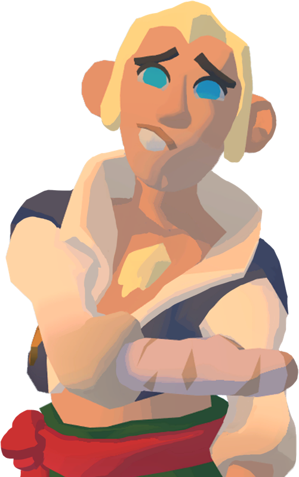
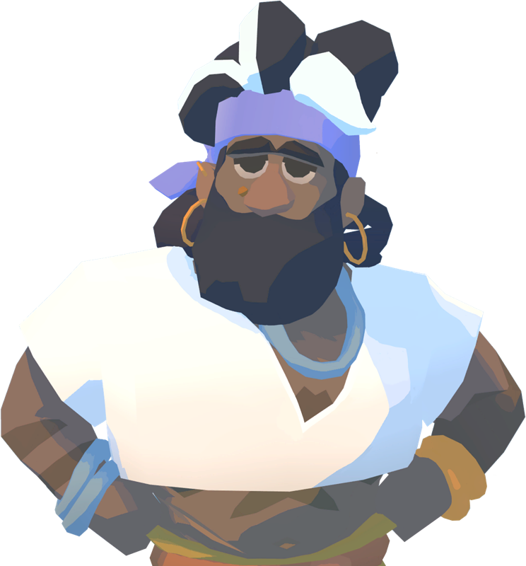
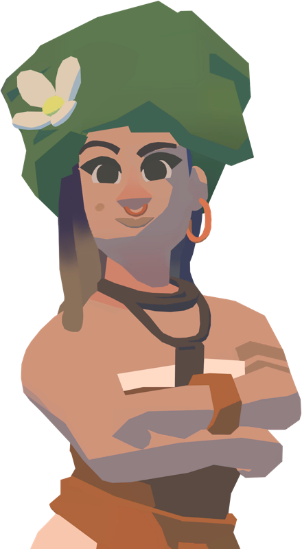
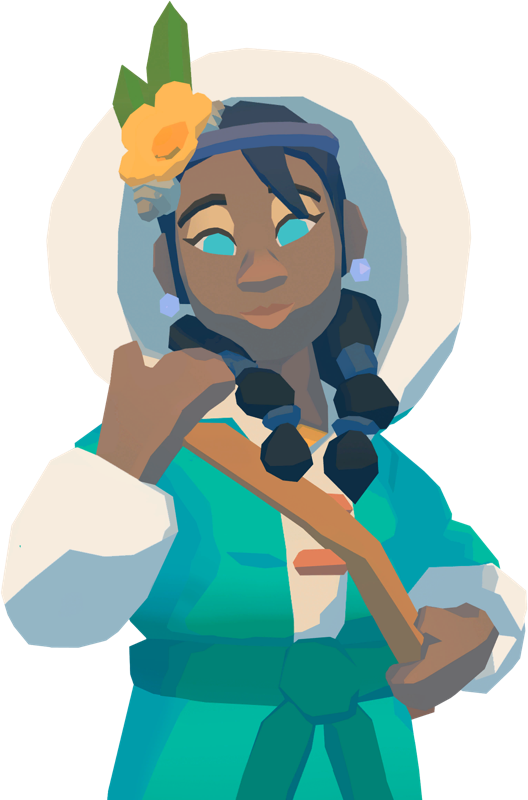
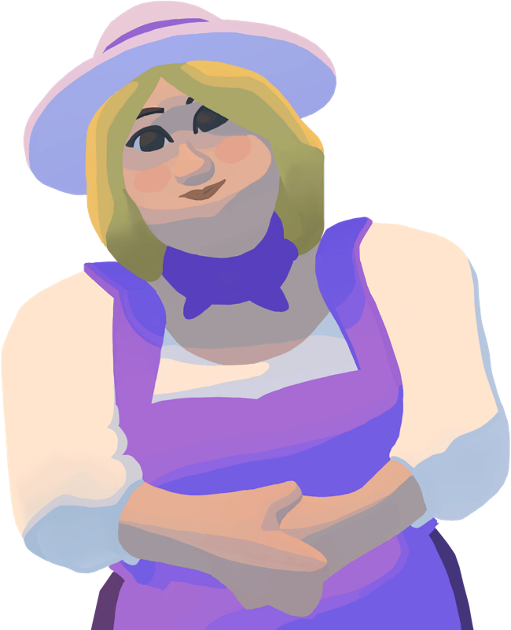
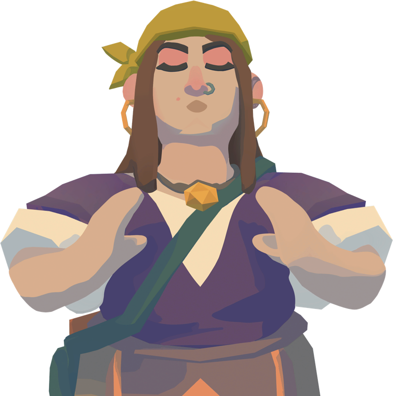
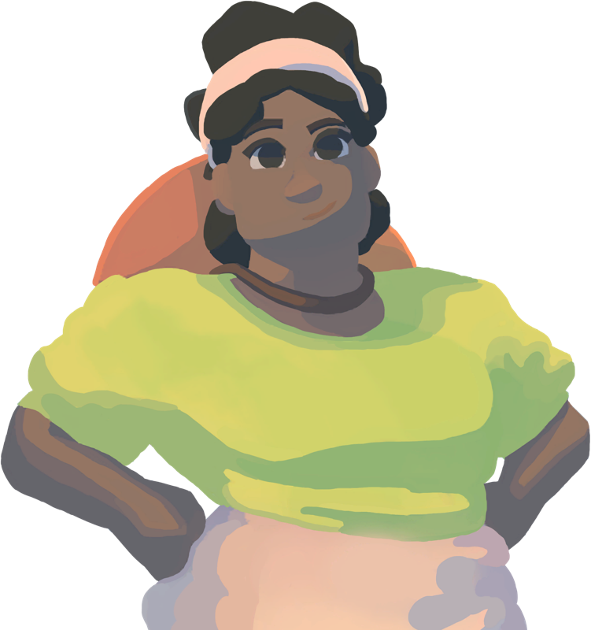

CATALOG
Leaders
Biographies, effect descriptions and content availability. Numeric bonus values are not established.
13 entries
| Leader | Description of effect | Availability |
|---|---|---|
 Chico | Released · official notes | |
 Cory Cory | Released · official notes | |
 Edgar Edgar | Villagers now eat less! | Unknown |
 Felix Felix | Villagers now need less Community, Fun, and Wellness! | Unknown |
 Fjordi Fjordi | Released · official notes | |
 Izzy | Released · official notes | |
 Jaqweshia | Veggies now grow faster! | Unknown |
 Jelena Jelena | Released · official notes | |
 Kaia | Released · official notes | |
 Maddy | Villagers now have more children! | Unknown |
 Maira | Released · official notes | |
 Miranda | Wheat now grows faster! | Unknown |
 Pablo Pablo | Villagers are happy to be around Pablo! | Unknown |